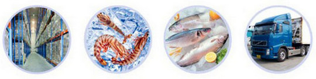
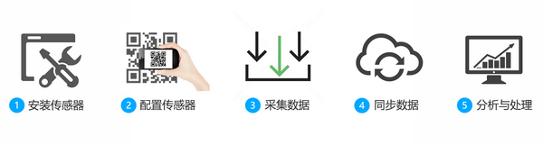
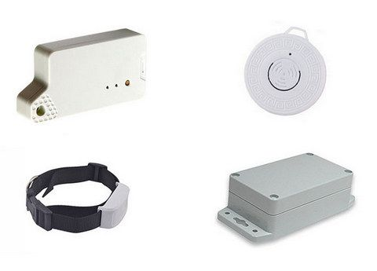
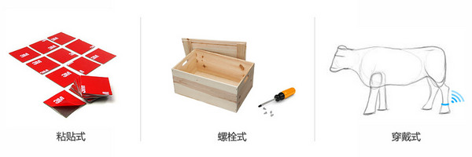
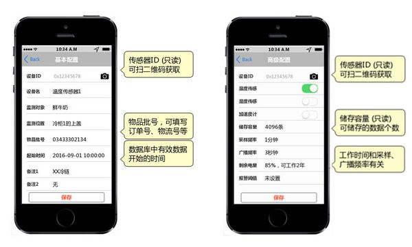
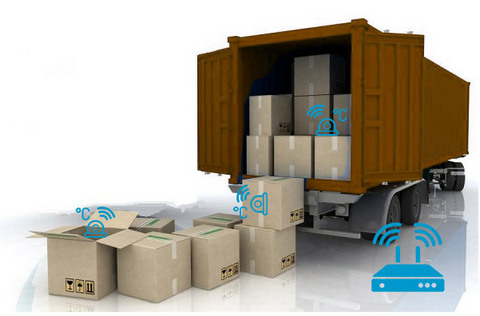

冷链物流中的温湿度数据监测
冷链物流
在冷链物流的运输和装卸途中，采集并记录货品所处的环境温湿度，确保整个采集过程更加精确、全面、自动化。

操作流程

- 安装传感器：将WiiMine安装至货品上或货箱内；
- 配置传感器：注册WiiMine的信息，如货品批次、物流单号等；
- 采集数据：冷链物流工作正式开展，在此期间，WiiMine会持续采集和记录数据；
- 同步数据：在运输途中或终点站，如果能连上WiiGate，WiiMine自动将数据上传云端；
- 分析与处理：在系统后台可以查看云端数据库，对异常情况做相应处理；
关于WiiMine、WiiGate的说明，请查看组网页面。
选择合适的安装方式
为了方便安装和精准探测环境，WiiMine传感器有不同形式的外壳可供选择：

通常采用粘贴或螺栓的安装方式，如果要安装在动物身上，可以选用可穿戴的方式：

用APP扫描二维码
WiiMine的外壳上印有二维码，二维码代表了一串数字，是区分WiiMine的唯一身份标识。
通过APP扫描二维码可以连接上WiiMine，管理员在APP中登记监测对象的信息，如货品批号、物流单号等，也可以查看WiiMine的剩余电量、存储容量，以及设置采样率、同步速率等。

自动数据采集和同步
WiiMine负责采集数据，但不能直接上网，如果要同步数据，就需要借助WiiGate。这有两种情况：
（1）物流途中有WiiGate
在这种情况下，数据的采集和同步同时进行。管理员可以在后台实时查看数据的变化趋势，缺点是由于WiiGate在运输途中通过移动网络上传数据，需要支付额外的流量费用。
（2）物流途中无WiiGate
在这种情况下，数据的采集和同步分开进行。WiiMine在运输途中采集数据，并记录数据在自己的存储空间。待卸货时，在区域内部署WiiGate，WiiMine会自动连接WiiGate并上传已采集的数据。
缺点是由于采集和同步分开进行，管理员看到的是滞后的数据。优势是WiiGate可以部署在有WiFi、以太网的环境内，以节省流量费用。

云端数据管理
管理员可以登录云端数据库的后台，查看货品在物流途中相应的指标是否处于合理范围之内。
我们也提供了云端数据库的第三方接口，方便和用户的管理系统相互对接。

| 参数 | 内容 |
|---|---|
| 传输距离 | BLE: 0.5-15m; 433MHz: 30-1000m |
| 续航时间 | 1年以上（典型值） |
| 天线规格 | 2.4GHz, 433MHz |
| 工作温度 | -20°C-+90°C |
| 安全加密 | AES 128bit |
| 安装方式 | 螺栓固定、粘贴固定 |
| 数据同步 | 自动扫描、上传 |
| 采样率 | 1分钟一次（典型值） |
| 存储空间 | 4K~32K条记录 |
| 温度测量 | ±0.5°C, 15 to +60°C（MEMS） ±0.3°C, -50 to +100°C（铜电阻） |
| 湿度测量 | ± 4.5%rH, 20 to +80%rH |
| 光照测量 | 可支持 |
| 气压测量 | 可支持 |
| Data Logger | 发现异常时，开启精细采样和存储 |
| 报警阈值 | 支持 |
| 消息推送 | 微信（首选）、邮件、短信 |
（略）